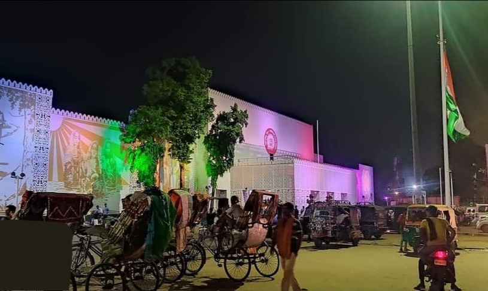
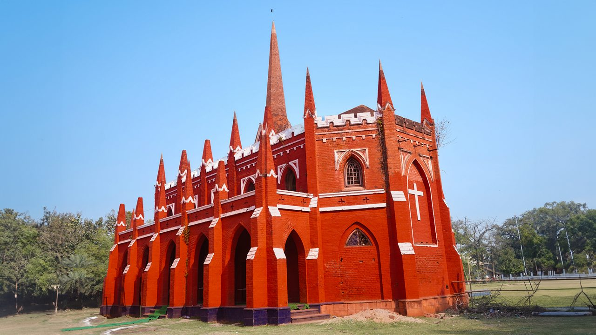
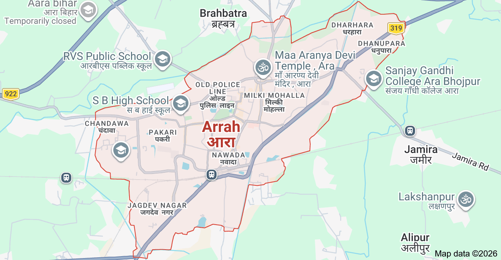

It is a city, a municipal corporation and the administrative headquarters of Bhojpur district (formerly known as Shahabad district) in the Indian state of Bihar. During British Raj, it served as the administrative headquarters and was considered the most populous urban centre of the historical Shahabad district. It is the headquarters of Bhojpur district, located near the confluence of the Ganges and Sone rivers, some 24 miles (39 km) from Danapur and 36 miles (58 km) from Patna.



The city holds an important position in Indian history, mainly because of its role in the Siege of Arrah, an important event during the Indian Rebellion of 1857. Today, Arrah is a cultural centre for the Bhojpuri speaking region of India. Its economy is driven by agriculture and the trade of building materials, mainly sand and bricks from the riverine plains.
In 1529, Babur conquered Bihar to subdue the local Afghan rulers and, after defeating the allied chiefs, he established his camp in Arrah to rejoice and assert his rule over the region. The Shahabad District Gazetteer records a local tradition identifying the place of his camp as being near the present-day Judge's Court.[14] His personal memoirs record anecdotes from his time in the city, including riding out from his camp to see the local water lilies, whose seeds he noted resembled pistachio nuts